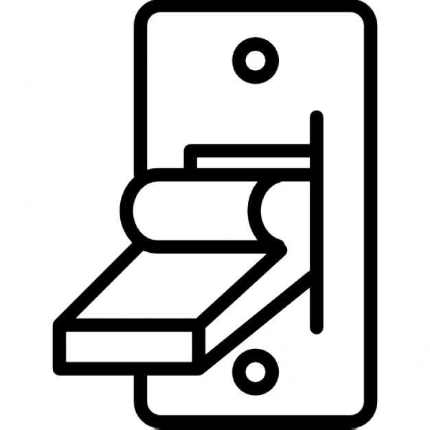
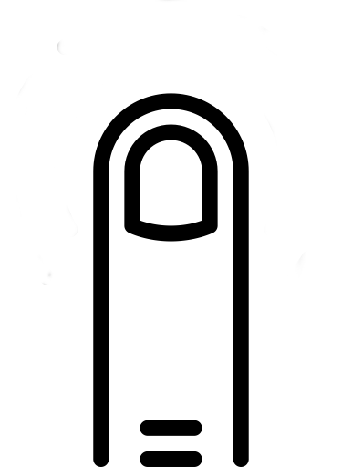

<div class="row">
  <h1>Sema IoT Platform!</h1>
</div>

<div class="row">
  <div class="col-md-6">
    <div class="panel panel-default">
      <div class="panel-heading">
        <span class="label label-warning" style="font-size: 20px">Potentiometer</span>
      </div>
      <div class="panel-body clickable" style="text-align:center;">
        <div>
          <div id="gaugeChart" style="height:226px"></div>
        </div>
      </div>
    </div>
  </div>
  <div class="col-md-6">
    <div class="panel panel-default">
      <div class="panel-heading">
        <span class="label label-warning" style="font-size: 20px">Switcher (<span id="switchStatus">off</span>)</span>
      </div>
      <div class="panel-body clickable" style="text-align:center;">
        
      </div>
    </div>
  </div>
</div>

<div class="row">
  <div class="col-md-6">
    <div class="panel panel-default">
      <div class="panel-heading">
        <span class="label label-warning" style="font-size: 20px">Buzzer</span>
      </div>
      <div class="panel-body" style="text-align:center;">
        
      </div>
    </div>
  </div>
  <div class="col-md-6">
    <div class="panel panel-default">
      <div class="panel-heading">
        <span class="label label-warning" style="font-size: 20px">Touch</span>
      </div>
      <div class="panel-body" style="text-align:center;">
        
      </div>
    </div>
  </div>
</div>

<script>
  var gaugeChart = new Highcharts.chart('gaugeChart', {
      chart: {
          type: 'gauge',
          plotBackgroundColor: null,
          plotBackgroundImage: null,
          plotBorderWidth: 0,
          plotShadow: false
      },
      title: {
          text: null
      },
      pane: {
          startAngle: -150,
          endAngle: 150,
          background: [{
              backgroundColor: {
                  linearGradient: { x1: 0, y1: 0, x2: 0, y2: 1 },
                  stops: [
                      [0, '#FFF'],
                      [1, '#333']
                  ]
              },
              borderWidth: 0,
              outerRadius: '109%'
          }, {
              backgroundColor: {
                  linearGradient: { x1: 0, y1: 0, x2: 0, y2: 1 },
                  stops: [
                      [0, '#333'],
                      [1, '#FFF']
                  ]
              },
              borderWidth: 1,
              outerRadius: '107%'
          }, {
              // default background
          }, {
              backgroundColor: '#DDD',
              borderWidth: 0,
              outerRadius: '105%',
              innerRadius: '103%'
          }]
      },

      // the value axis
      yAxis: {
          min: 0,
          max: 1030,
          minorTickInterval: 'auto',
          minorTickWidth: 1,
          minorTickLength: 10,
          minorTickPosition: 'inside',
          minorTickColor: '#666',
          tickPixelInterval: 30,
          tickWidth: 2,
          tickPosition: 'inside',
          tickLength: 10,
          tickColor: '#666',
          labels: {
              step: 2,
              rotation: 'auto'
          },
          title: {
              text: 'Torsion'
          },
          plotBands: [{
              from: 0,
              to: 600,
              color: '#55BF3B' // green
          }, {
              from: 600,
              to: 900,
              color: '#DDDF0D' // yellow
          }, {
              from: 900,
              to: 1030,
              color: '#DF5353' // red
          }]
      },
      series: [{
          name: 'Speed',
          data: [0],
          tooltip: {
              valueSuffix: ' km/h'
          }
      }]
    },
    // Subscribe to the socket
    function (chart) {
      socket.on('sensors:values', function(data) {
          var point = gaugeChart.series[0].points[0];
          point.update(data.rotary.value.abs);
      });
  });

  $(document).ready(() => {
    $('#switcher').click(function() { 
      let stateImage = $(this).attr('src');
      let newState = (stateImage.slice(stateImage.lastIndexOf('_') + 1, stateImage.lastIndexOf('.')) === 'on') ? 'off' : 'on';
      $(this).attr('src', (stateImage.indexOf('_on.') !== -1) ? stateImage.replace('_on.', '_off.') : stateImage.replace('_off.', '_on.'));
      socket.emit('event:sensor', { 
        sensor: 'switcher', 
        action: newState
      });
    });

    $('#buzzer').click(function() { 
      let state = $(this).attr('src');
      $(this).attr('src', (state.indexOf('_on.') !== -1) ? state.replace('_on.', '_off.') : state.replace('_off.', '_on.'));
    });

    semaUtils.requestSensorState('led', (sensorData) => {
      if(sensorData.sensor === 'led') {
        changeSwitcherStatus(sensorData.state);
      }
    });
  });

  function changeSwitcherStatus(updatedValue) {
    $('#switchStatus').text(updatedValue);
    let imageSrc = $('#switcher').attr('src');
    let currentState = (imageSrc.slice(imageSrc.lastIndexOf('_') + 1, imageSrc.lastIndexOf('.')) === 'on') ? 'on' : 'off';
    $('#switcher').attr('src', imageSrc.replace(currentState + '.', updatedValue + '.'));
  }

  function changeTouchSensor(newState) {
    let state = $('#touch').attr('src');
    if(state.indexOf('_on') !== -1 && newState === 0) {
      $('#touch').attr('src', state.replace('_on.', '_off.'));
    } else if(state.indexOf('_off') !== -1 && newState === 1) {
      $('#touch').attr('src', state.replace('_off.', '_on.'));
    }
  }

  socket.on('event:sensor', (data) => {
    if(data.sensor === 'switcher') {
      changeSwitcherStatus(data.value);
    }
  });

  socket.on('sensors:values', (data) => {
    if(data.touch && document.querySelector('#touch')) {
      changeTouchSensor(data.touch.state);
    }
  });
</script>